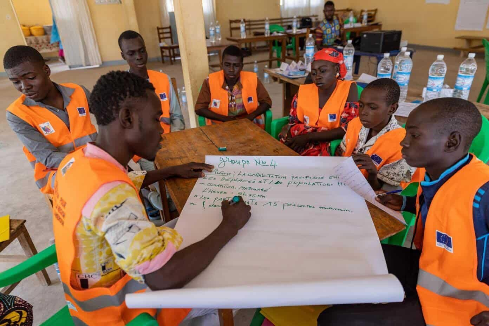
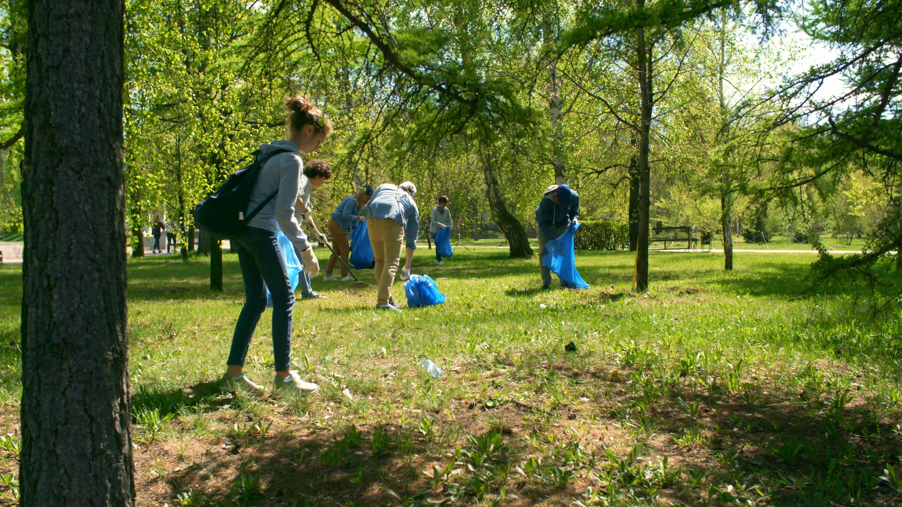

Explora la participación activa, el compromiso cívico y la construcción de comunidades fuertes. Desarrolla habilidades para la acción efectiva.
| Fundamentos del compromiso cívico | Metodologías de participación | Diseño y gestión de proyectos sociales | Comunicación y redes comunitarias |
|---|---|---|---|
| Se basan en la participación activa | Es un procedimiento participativo | Soluciona problemáticas comunitarias | Son infraestructuras de comunicación |

